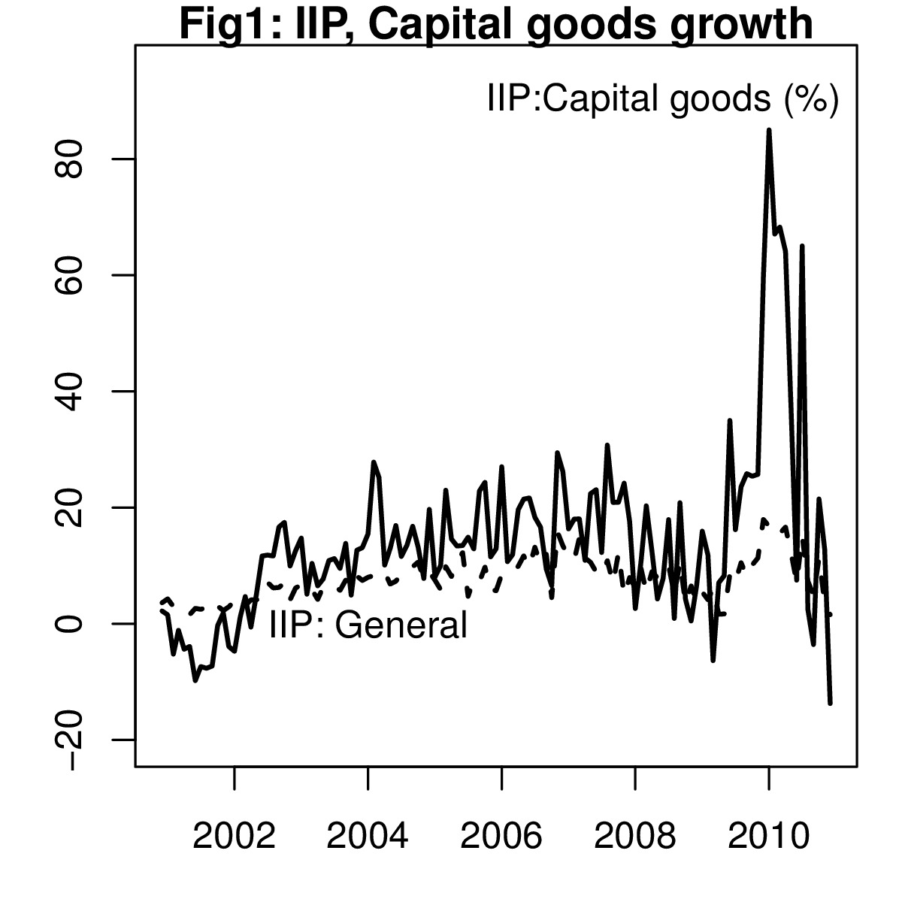

Cannot trust that IIP data
Financial Express, 19 February 2011
The sharp drop in the growth rate of IIP should be viewed with caution. The index rose by a mere 1.6 percent compared to December 2009. The sharp slowdown has raised questions about the need for fiscal and monetary consolidation. There are two issues to consider. First, that the data may not reflect actual production, given that the production basket has weights from 1993-94, which excludes some of the items that have a large share in production today. Second, the slowdown in IIP has come from a decline in capital goods production, which suggests that investment activity is down.

Table 1: Growth in industrial production (Dec 2010) Index of industrial production (wt 100) 1.55 Mining & quarrying (wt 10.47) 3.78 Manufacturing (wt 79.36) 1.02 Electricity (wt 10.17) 5.99 Basic goods (wt 35.565) 5.19 Capital goods (wt 9.257) -13.72 Intermediate goods (wt 26.514) 6.57 Consumer goods (wt 28.664) 3.87
Table 2: Growth in capital goods components (Dec 2010) Ship building and repair production (wt 0.328) -60.86 Computer system & peripherals production (wt 0.399) -51.70 Cooling towers production (wt 0.018) -45.69 Agricultural implements production (wt 0.314) -44.08 Insulated cables/wires production (wt 0.244) -42.49 Dumper production (wt 0.052) -33.98 Turbines (steam/hydro) production (wt 0.206) -29.02 Industrial machinery production (wt 0.534) -23.40 Material handling equipment production (wt 0.166) -19.70 Furnaces production (wt 0.004) -19.67 Broad gauge covered wagons production (wt 0.064) -19.48 Broad gauge passenger carriage production (wt 0.264) -17.72 Diamond tools production (wt 0.042) -16.45 Machine tools (IPP) production (wt 0.137) -8.56 Electric generators (incl.alternators) production (wt 0.203) -6.62 Lifts production (wt 0.022) -2.91 Power & dist. transformers (SSI) production (wt 0.002) -0.22 Textile machinery production (wt 0.264) 0.00 Air and gas compressor (SSI) production (wt 0.006) 0.00 Power driven pumps production (wt 0.19) 0.24 Diesel engines (SSI) production (wt 0.001) 0.27 Dump loaders production (wt 0.054) 2.15 Diesel engines (IPP) production (wt 0.832) 2.84 Monoblock pumps production (wt 0.017) 2.90 Electric motors (SSI) production (wt 0.006) 3.92 Machine tools (SSI) production (wt 0.05) 4.00 Electric motors (IPP) production (wt 0.192) 4.22 HT insulators production (wt 0.156) 5.07 Process control instruments production (wt 0.33) 5.48 PVC/PICL production (wt 0.026) 5.73 Cutting tools (lathes etc.) production (wt 0.106) 5.99 Wheel and axles complete set production (wt 0.084) 6.10 Electric motors phase one production (wt 0.159) 13.90 Rubber conveyor belting production (wt 0.015) 15.21 Cranes production (wt 0.023) 16.51 Laboratory and scientific inst. production (wt 0.435) 16.78 Switchgear (circuit breakers) production (wt 0.043) 17.57 Telecommunication cables production (wt 0.25) 20.64 Locomotives production (wt 0.144) 20.83 Refrigerators & air-conditioning production (wt 0.06) 23.60 Hydraulic machine/cylinders production (wt 0.133) 24.59 Protection system/switch board etc. production (wt 0.406) 25.95 Auto rickshaws production (wt 0.088) 26.58 Complete tractors production (wt 0.459) 28.69 Medical and surgical instruments production (wt 0.124) 31.41 Control panels/boards/disks production (wt 0.103) 32.10 Air and gas compressor (IPP) production (wt 0.068) 33.18 Boilers production (wt 0.225) 34.13 Utility vehicles production (wt 0.069) 36.04 Power & dist. transformers (IPP) production (wt 0.304) 36.66 Commercial vehicles production (wt 0.103) 43.37 Printing machinery production (wt 0.027) 78.56 Well/offshore platforms production (wt 0.71) 89.43 Table 1 below shows how various components of IIP grew in December 2010, both in sectoral and use based terms. It shows that capital goods were the worst hit and fell by more than 13 percent. This decline is a serious cause for concern in any economy since it gives an indication about investment plans in the economy.
Figure 1, however, shows that capital goods growth has been very volatile over the last two years. This has increased the volatility of IIP. There appear to be some issues of coverage. The first problem with the IIP data has been its coverage. The episode of very sharp growth in July 2010 brought this to attention. In July 2010 IIP growth was reported to be 15 percent. The output of machinery grew by 49 percent. Within machinery the production of "insulated wires and cables" grew by 518 percent. This pulled up IIP sharply. Added to this was a 57 percent increase in the production of PVC pipes and tubes.
Similarly, in 2009-10 measured by IIP the growth in the machinery sector at 21 percent. However, when we compare this number to the sales revenues of corporates in this sector from CMIE's Prowess database, we find that revenues grew by only 2.6 percent. This suggests a discrepency. Data from CMIE suggests that in the machinery sector companies which manufacture wind turbines and internal combustion engines took a big beating. These items are, however, not included in the IIP since IIP has an old base. Similarly, IIP for rubber, plastic, petroleum and coal products reported a 15 percent rise in 2009-10. However, sales revenues from these companies declined by 2.5 percent during that year. The 15 percent rise was from PVC pipes, giant pripes and tubes and rubber tyres.
Table 2 shows where the growth in fell in capital goods. A sharp decline of more than 60 percent is seen in ship building and repair. Similarly the production of computer systems, cooling towers, agricultural implements, insultated cables and wires, dumpers, turbines, industrial machinery, furnaces, wagons, diamond and machine toods, electric generators, lifts and transformers actually declined. Textile machinery saw no increase in prodction compared to last year. A number of other equipment saw very low growth. If the above data is correct, it is very difficult to reconcile it with the growth in sales of companies in this sector.
The CSO proposes to bring out the new IIP with 2004-05 as the base year soon. This should be done with utmost urgency so that good data can guide policy decisions in these uncertain times.
Back up to Ila Patnaik's media page
Back up to Ila Patnaik's home page